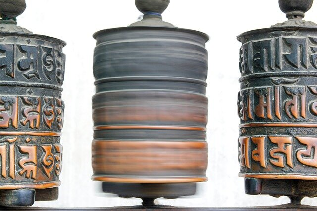

¿Qué es el sánscrito?
Es una lengua clásica de la india, considerada como la lengua de los dioses debido a su complejidad. Es respetada como sagrada, ya que se valora como la más antigua de la humanidad, según el hinduismo.
La palabra viene de Sam, que significa bien/bueno y Kritam, que se entiende como terminado/hecho. El significado conjunto se comprende por “Perfecto, completo, exacto”.
En India se cree en el poder espiritual de este idioma y esto lo entendemos desde el poder que tiene el lenguaje, el sonido. Aceptando esta resignificación, podemos decir que el sánscrito es yoga en forma lingüística , ya que es energía divina en una estructura de sonido, lo que nos conecta con lo absoluto.
El sánscrito para los niños y niñas resulta algo muy curioso, ya que es algo completamente nuevo y por medio de ello, podemos favorecer la concentración, el lenguaje, autoestima, etc.
¿Cómo hacerlo?
El nombre de las posturas/asanas, nos pueden permitir favorecer el proceso lecto-escritor de niños y niñas que lo estén iniciando.
Podemos crear trabalenguas para aprender determinadas asanas y así hacerlo mucho más divertido.
Clasificar las asanas según categorías que ellos/ellas mismas definan.
Crear canciones para saludar al sol (Surya) y a la luna (Chandra).
Utilizar cualquiera de las palabras que te dejo a continuación para recitarla como mantra.
Jugar a deletrear las palabras más complejas y así estamos fortaleciendo procesos de concentración, memoria, etc.
Y mucho más…
A continuación te dejo una lista de palabras que pueden integrar a tus clases:
Ananda: Feliz
Chandra: Luna
Surya: Sol
Padma: Flor de loto
Atman: Alma
Darshan: Concentración de la mirada
Om: Sílaba sagrada, sonido del universo.
Ahimsa: No violencia
Satya: No mentir
Asteya: No robar
Pranayama: Respiración
Dhyana: Meditación
Shanti: Paz
Prana: Energía
Posturas
Tadasana: Montaña
Uttanasana: Pinza
Adho Mukka: Perro hacia abajo
Garudasana: Aguila
Uthita Trikonasana: Triángulo
Dhanurasana: Arco
Halasana: Arado
Sarvangasana: Vela
Bhujangasana: Serpiente
Pachimottanasana: Pinza sentada
Navasana: Barco
Utkatasana: Silla
Vrkasasana: Arbol
Virabhadrasana: Guerrero
Matsyasana: Pez
Ustrasana: Camello
Setubandhasana: Puente